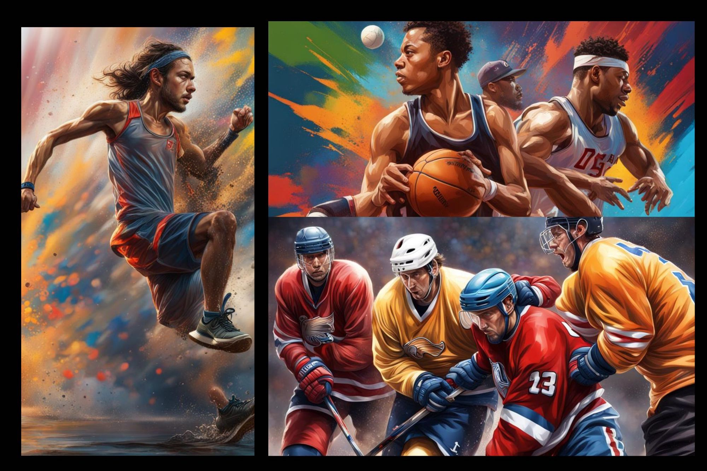
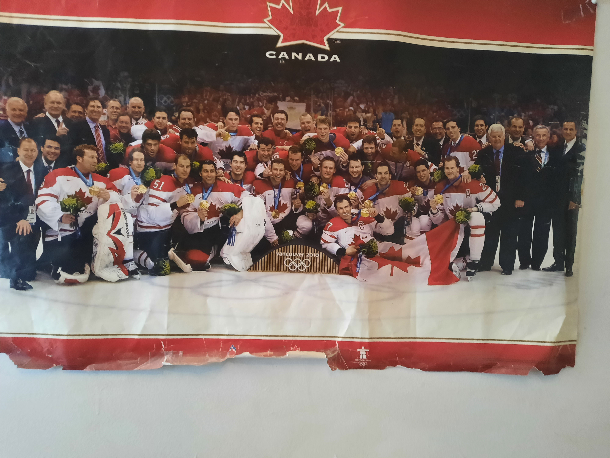

Sports
The other of my two loves or hobbies is sports. I have been watching and playing sports for half a decade now, and while I have my favourites, I pretty much enjoy any sport. My favourites are Hockey, Football (for my fellow North Americans, this is Soccer), Basketball, swimming and running. My love for this come from the athletes, teams, and the moments/events.
One of the avenues of writing that I have wanted to get involved in is sports journalism, and it is still an industry that I have an interest in working in. For a start, I thought focusing on the athletes, teams, and moments that made me fall in love with sport was the right place for me to start.
Canada vs USA: 2010 Winter Olympics Mens Hockey Final - Vancouver
This is a writing piece on the Men's Hockey final in the 2010 Winter Olympics in Vancouver. The game had a very strong impact on me as a fan of hockey and sports in general. As you can see the image above is a poster that I have had since my tenth birthday, which took place a few months after this month.